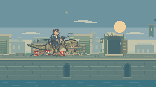
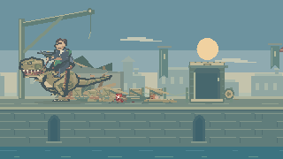
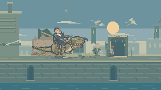
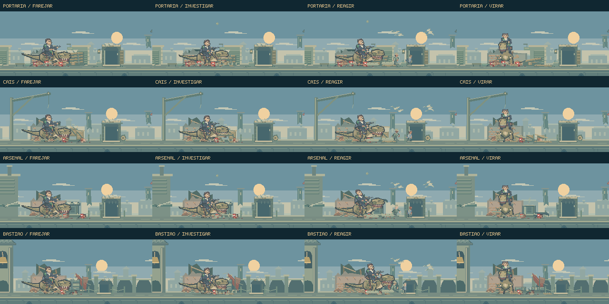

Uma rua que
continua viva.
Depois da destruição inicial, o dinossauro investiga o que restou. O cavaleiro observa as passagens, moradores procuram abrigo e aves abandonam os poleiros. A patrulha continua na área em que Feka está lutando.
Jogar o encontroAssistir às atividades- Aproximação
- Investigação
- Reação
- Consequência
- Patrulha
Quatro ruas, vistas ao longo do tempo.
Estudo visual de 36 segundos, sem áudio, com as quatro áreas lado a lado. Usa o modelo e o renderizador do jogo, com posições de Feka escolhidas e mantidas para inspecionar a animação. Não é uma partida gravada nem uma avaliação da dificuldade.
Uma intenção por vez
A cabeça baixa antes do contato. O cavaleiro acompanha o movimento com o corpo e as rédeas. A reação termina em recuperação, virada e deslocamento; materiais e partículas conservam seus próprios tempos de queda.
O lugar guarda o que aconteceu
Tábuas, tampas e pedras ficam deslocadas. Os moradores que alcançam o abrigo permanecem lá. Nas voltas seguintes, a distância da patrulha varia, há novas inspeções e as aves retornam gradualmente pelo alto.

Farejar, remexer e seguir.
O dinossauro abaixa o focinho até os materiais, desloca a pilha e solta uma viga. O movimento distingue preparação, esforço e soltura. A peça cai na rua e permanece entre os escombros.
A fuga começa atrás da pilha. Os moradores atravessam o espaço e desaparecem dentro da passagem, com entradas escalonadas e passos próprios.
O cais ainda tem movimento.
As caixas têm ripas, travessas, cintas e tampas que se soltam. A inspeção termina com um movimento de cabeça que ergue o material antes de deixá-lo cair. O abrigo recebeu suportes metálicos e uma corda enrolada.
Depois da reação, o cavaleiro verifica a arma e olha a rua. O dinossauro volta em direção às ruínas, procura movimento e retorna à pilha, com percursos diferentes a cada volta.


Uma resposta do ambiente.
A tampa metálica se desprende, a abertura fica exposta e o vapor sobe em pequenos volumes. O cavaleiro recua e o dinossauro recolhe a cabeça. O vazamento perde intensidade após a ruptura.
No bastião, a ação muda: o peso vem de uma pisada, com recolhimento das pernas, queda e compressão ao tocar o chão. As pedras e a pequena faixa respondem ao impacto.
Contato, textura e silhueta.

Pixels nativos. A virada preserva a paleta atmosférica da vista lateral. Fumaça, aves em voo e poeira decorativa são reduzidas quando a preferência de movimento reduzido está ativa.
A cena acompanha Feka.
As atividades usam um relógio próprio. Assim, a patrulha continua quando a cena principal aguarda o jogador, e os grandes contatos esperam o enquadramento. Ao entrar na próxima rua, a apresentação daquele lugar assume a cena.
Os portões e a progressão continuam ligados ao combate do jogador. As novas atividades pertencem ao fundo e não acrescentam colisões, projéteis ou dano no primeiro plano.
Publicação rápida conforme as instruções do projeto: build de produção, sem suíte de testes, typecheck ou revisão de navegador. O material acima documenta a direção de arte; não comprova o balanceamento da luta.
Tempos e posições do estudo · Notas desta rodada · Destruição inicial